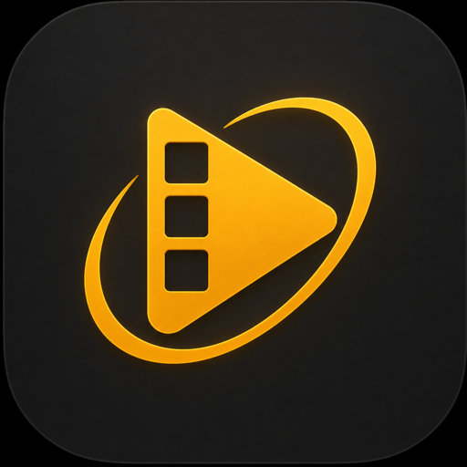
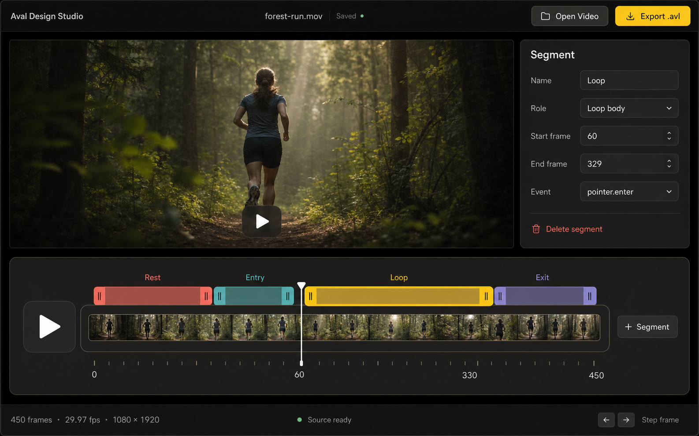

Frame-accurate timeline
Author with exact half-open frame ranges and precise state transitions.

Aval Design Studio View on GitHubTurn source video into state-driven AVAL bundles with frame-accurate states, routes, loops, reversals, and packed transparency.
macOS · Windows · Linux

Open local media. Studio inspects timing, dimensions, codec, transparency, and source-prep requirements.
Define states, units, routes, triggers, loops, reversals, and exact half-open frame ranges.
Compile AV1, VP9, H.265, and H.264 assets with the official AVAL compiler.
Studio projects project directly to AVAL 1.0. The compiler remains the final authority for validation, encoding, manifests, and browser source markup.
Author with exact half-open frame ranges and precise state transitions.
Scrub, step, and inspect states and routes with instant feedback.
Prepare and validate transparency for reliable browser playback.
Source media stays on your machine. No upload is required.
Compiler, Node runtime, and media-tool provenance are pinned and recorded.
Uses the official AVAL compiler for encoding and browser-ready bundles.
Aval Design Studio is an MIT-licensed community project built as a companion to the open AVAL format. Source media stays on your machine, and the official compiler owns the final bundle.
Read the release notesOne authored project. Four ordered codec outputs.
Author the state graph visually. Hand developers a browser-ready AVAL bundle.